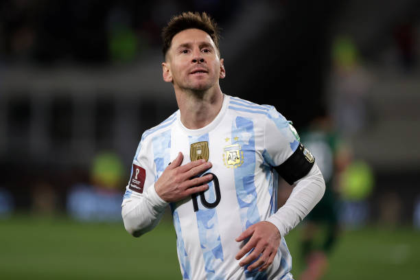
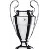

Messi passou 21 anos jogando no Barcelona, período em que participou de 778 jogos e fez 672 gols e 303 assistências, tornando-se o maior artilheiro da história do clube.Messi foi o jogador que mais conquistou títulos com o clube, 34 no total.A era Messi chegou ao fim no dia 8 de agosto de 2021, quando seu contrato não foi renovado.
BARCELONA
PSG
Messi partiu para Paris, a fim de fazer parte do projeto do PSG. Com uma sequência de maus resultados, a diretoria do clube francês decidiu não dar mais sequência com o jogador. No PSG, Messi jogou duas temporadas, atuou em 75 partidas e balançou as redes em 32 oportunidades e com 35 assistências.
INTER MIAMI
Atualmente o Argentino joga pela equipe do Inter Miami, foi campeão da Copa das Ligas, o primeiro título da história do clube da Flórida. Com a conquista, o camisa 10 chegou a 44 títulos em sua carreira, se tornando o jogador de futebol com mais títulos na história. Messi, atuou em 25 partidas e balançou as redes em 23 oportunidades e com 16 assistências

ARGENTINA
Ao longo de sua trajetória na seleção nacional, Lionel Messi representou a Argentina por 18 anos, participando de 180 jogos. Durante esse período, ele marcou 106 gols e proporcionou 56 assistências. Messi é reconhecido como o maior artilheiro da história da seleção argentina. Messi liderou a Argentina para vitórias em várias outras competições, como a Copa do Mundo e a Copa América.

Títulos de Lionel Messi por clubes:
Liga dos Campeões da UEFA: 4 (2005–06, 2008–09, 2010–11 e 2014–15)
 Mundial de Clubes da FIFA: 3 (2009, 2011 e 2015)
Mundial de Clubes da FIFA: 3 (2009, 2011 e 2015)
 Supercopa da UEFA: 3 (2009, 2011 e 2015)
Supercopa da UEFA: 3 (2009, 2011 e 2015)
 Campeonato Espanhol: 10 (2004–05, 2005–06, 20
Campeonato Espanhol: 10 (2004–05, 2005–06, 20
08–09, 2009–10, 2010–11, 2012–13, 2014–15, 2015–16, 2017–18 e 2018–19)
 Copa do Rei: 7 (2008–09, 2011–12, 2014–15, 2015–16, 2016–17, 2017–18 e 2020/21)
Copa do Rei: 7 (2008–09, 2011–12, 2014–15, 2015–16, 2016–17, 2017–18 e 2020/21)
 Supercopa da Espanha: 8 (2005, 2006, 2009, 2010, 2011, 2013, 2016 e 2018)
Supercopa da Espanha: 8 (2005, 2006, 2009, 2010, 2011, 2013, 2016 e 2018)
Campeonato Francês: 2 (2021-22 e 2022-23)
Supercopa da França: 1 (2022-23)
 Copa da Liga Norte-Americana: 1 (2023)
Copa da Liga Norte-Americana: 1 (2023)
Títulos de Lionel Messi pela Seleção Argentina:
Copa do Mundo Sub-20: 2005
 Medalha de ouro nos Jogos Olímpicos: 2008
Medalha de ouro nos Jogos Olímpicos: 2008
 Copa América: 2021
Copa América: 2021
Finalíssima: 2022
 Copa do Mundo: 2022
Copa do Mundo: 2022